Новости
ДТК Смарт-тек, една од 10-те стартапи кои ја одбележаа 2017
29
дек
2017
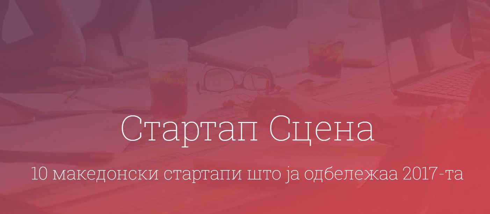
"Може да се кажеме дека 2017-та е почетокот на една вистински зрела стартап заедница."...
Универзален бројач на електрични и оптички импулси PCR-41
13
дек
2017
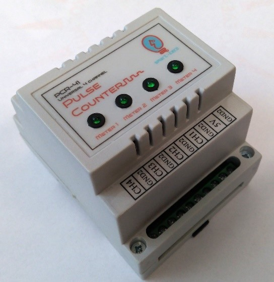
PCR-41 е четириканален универзален електронски бројач на оптички или електрични импулси согласно стандардот EN 62053-31...
Успешна соработка со Силган Метал Пекиџинг
13
јан
2017
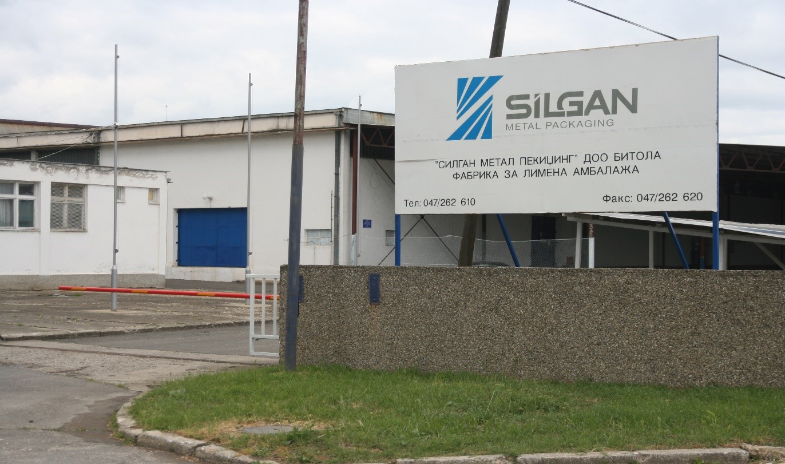
ДТК Смарт-тек е компанија која делува во областа на развој и имплементација на системи за мерење, анализа и управување со електрична енергија...
ДТК Смарт-тек повторно добитник на грант од ФИТР
05
дек
2016
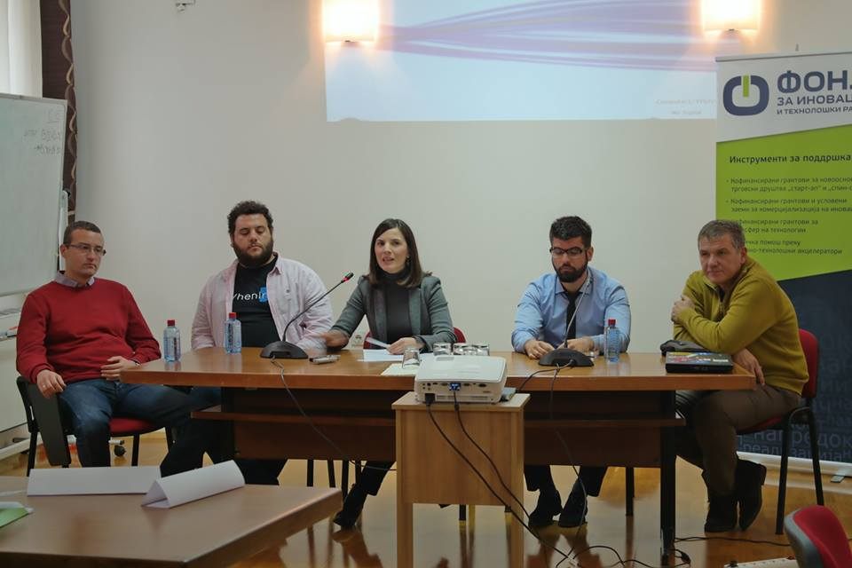
ДТК Смарт-тек е добитник на грант од третиот јавен повик за финансирање на проекти под инструментот
Кофинансирани грантови за новоосновани трговски друштва „старт-ап“ и „спин-оф“ од Фондот за...
ДТК Смарт-тек во поддршка на СКЕЕОР 2016
08
ное
2016
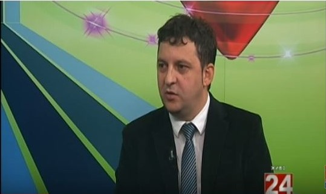
Управителот на ДТК Смарт-тек, минатата година, одржа пленарно предавање на СКЕЕОР 2015, а годинава ги придружуваше студентите на гостување во 24вести...
Интервју со нашите практиканти
20
јун
2016
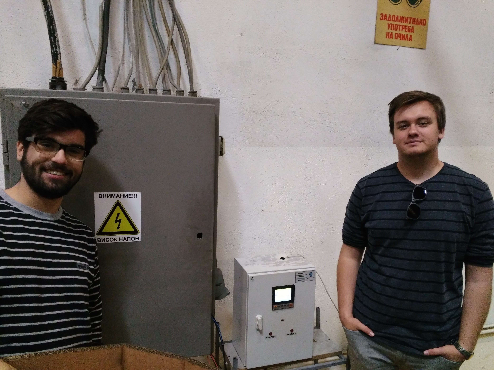
За fakulteti.mk, нашите студенти, заедно со управителот д-р доц. Живко Коколански,
дадоа свое мислење и ги споделија досегашните впечатоци, како практиканти во Смарт-тек...
Интервју за порталот енергетска ефикасност
07
јун
2016
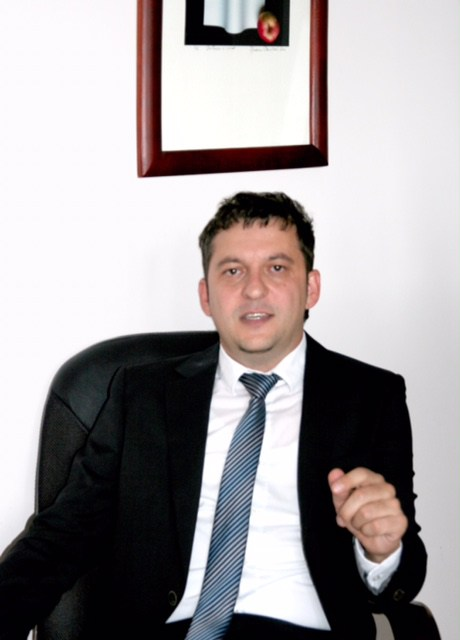
Прочитајте го интервјуто со доц. д-р Живко Коколански, управител на ДТК Смарт-тек, на следниот линк:...
Инсталација на систем во СИЛГАН
26
апр
2016
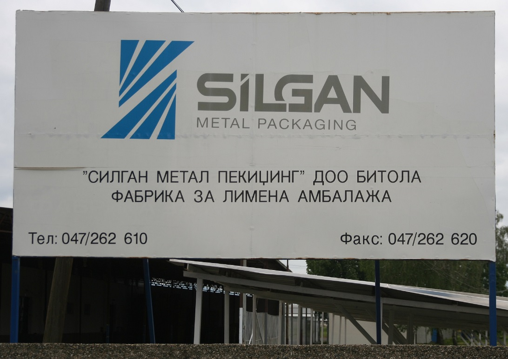
ДТК Смарт-тек инсталираше нов систем за менаџмент со електрична енергија во фабриката за лимена амбалажа, „СИЛГАН метал пекиџинг“ во Битола...
Инсталација на систем во МИК Св. Николе
13
ное
2015
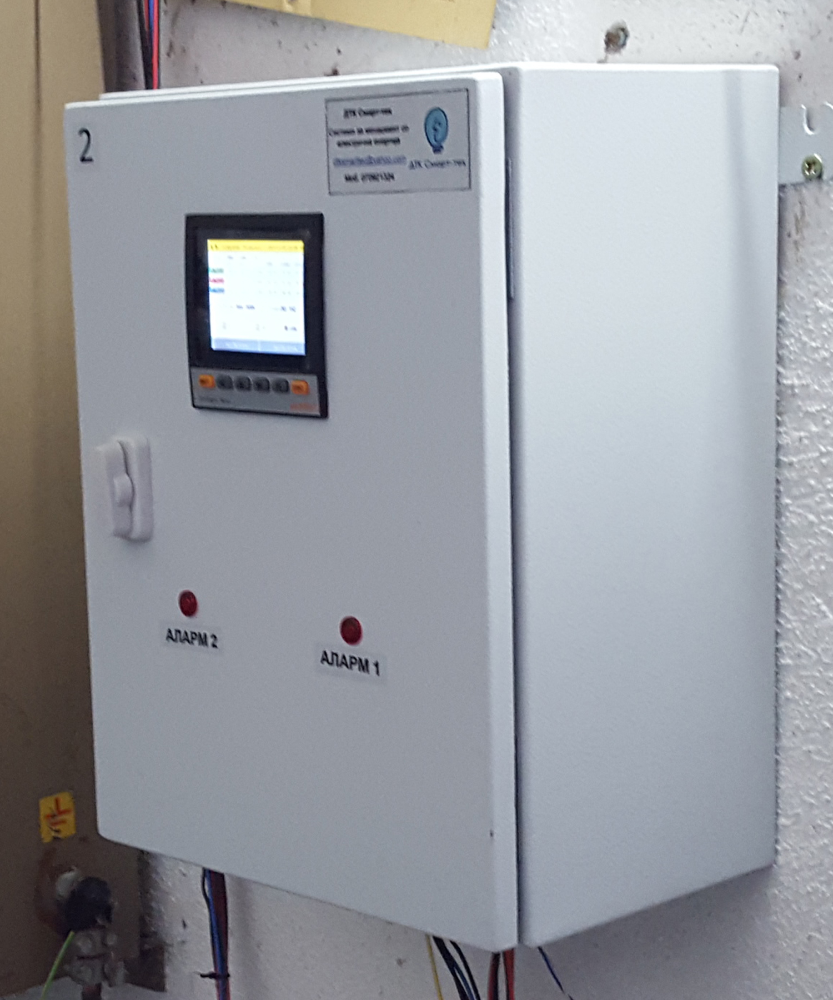
ДТК Смарт-тек инсталираше систем за менаџмент со електрична енергија во Месна индустрија и кланица (МИК) св. Николе...
Промоција на системите на ФЕИТ
11
ное
2015
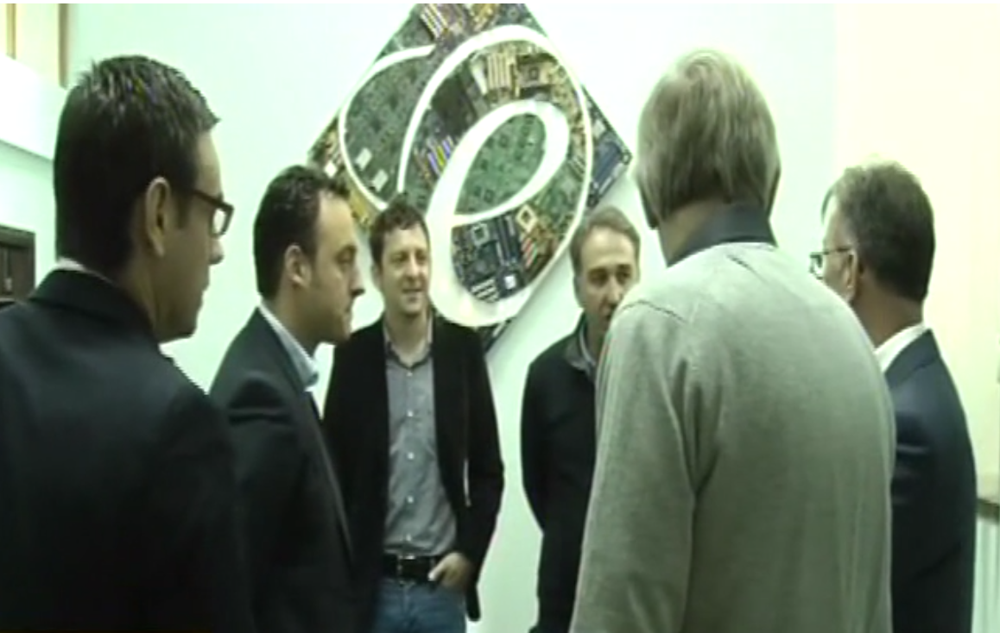
На 11 Ноември 2015 година беше промовирана првата некомерцијална инсталација на систем за менаџмент со електрична енергија на компанијата ДТК Смарт-тек на Факултетот за електротехника и информациски...
Учество на Технома 2015
15
окт
2015
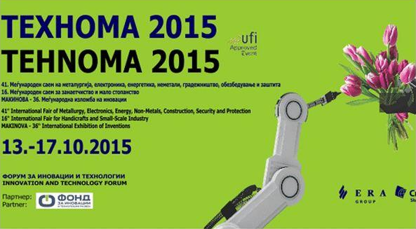
Важноста од соработка на компаниите со научно-истражувачките институции беше една од главните теми на вториот ден на Технома 2015.
ДТК Смарт-тек добитник на грант од ФИТР
22
јун
2015
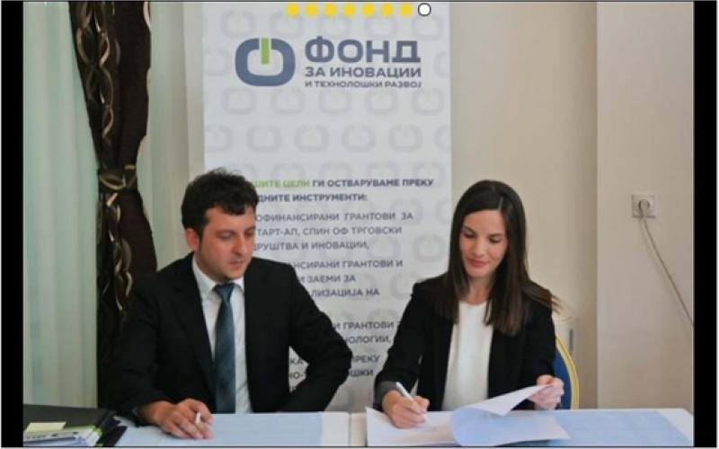
Нашата компанија е добитник на грант финансиран од Фондот за иновации и технолошки развој во Република Македонија.
Официјалното потпишување на договорот со ФИТР се изврши на 22.06.2015 год.